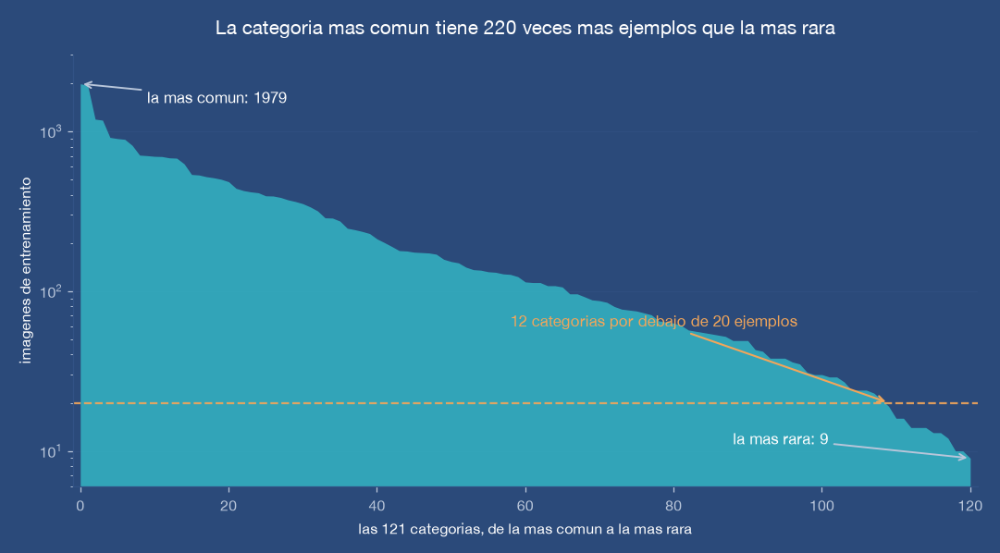
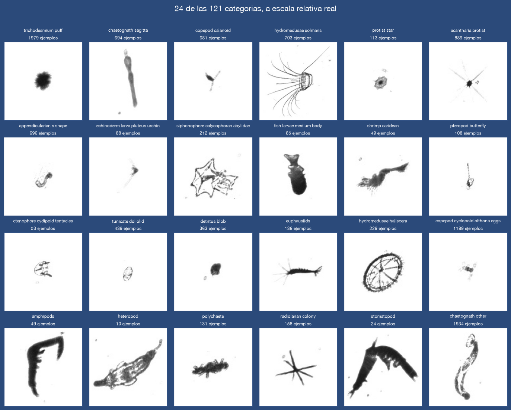
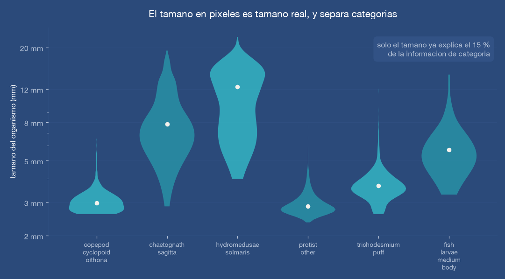
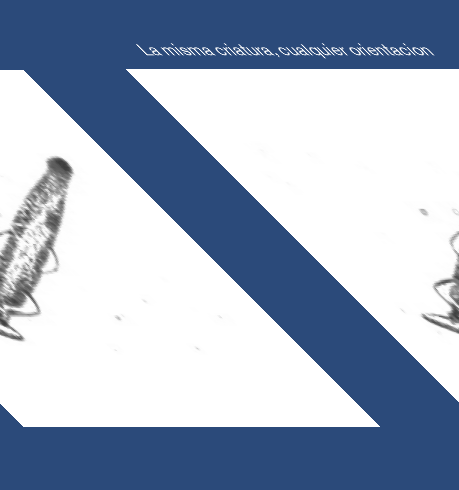

Probabilidades, no etiquetas
El sistema entrega una distribución completa sobre las 121 categorías y se recalibra contra datos que nunca vio. Eso permite estimar abundancias con su incertidumbre, no solo poner un nombre a cada imagen.
El plancton es la base de toda la red trófica marina y el primer sistema que responde cuando el océano cambia. Los instrumentos que lo fotografían generan millones de imágenes al día. Construimos el sistema que las identifica.
Se sabe fotografiar el plancton mucho mejor de lo que se sabe identificarlo. El cuello de botella no está en el mar: está en el escritorio.
La brecha
Un instrumento remolcado como el que produjo estas imágenes atraviesa hasta 160 litros de agua por segundo y recorta cada organismo que encuentra. Una sola campaña deja cientos de miles de recortes.
Identificarlos exige una persona con formación taxonómica, y hay pocas. El resultado es conocido: campañas completas archivadas sin procesar, y series de tiempo que nunca se construyen porque nadie puede revisarlas a mano.
Convertir esas imágenes en un conteo estructurado por tipo de organismo, de forma automática, para que el monitoreo deje de depender de cuántos especialistas se puedan contratar.


Tres propiedades del problema que el sistema aprovecha, y que un clasificador genérico desperdicia.
Primero · El tamaño es un dato
El instrumento ilumina con luz colimada, así que el aumento óptico es constante en todo el volumen que fotografía: un organismo ocupa el mismo número de píxeles esté cerca o lejos del lente. El tamaño de la imagen es el tamaño real del animal.
Medimos cuánto vale esa señal: el tamaño por sí solo, sin mirar el interior de la imagen, ya explica el 15 % de la información necesaria para clasificar. Redimensionar todo a un cuadro fijo —lo que hace cualquier sistema estándar— tira esa información a la basura. Nosotros la extraemos antes y se la entregamos al modelo por separado.


Segundo · No hay arriba
Un organismo flotando atraviesa el campo de la cámara en cualquier ángulo. A diferencia de una fotografía de un perro o un coche, aquí no existe una orientación natural que el sistema pueda dar por supuesta.
El sistema se entrena viendo cada organismo en todos los ángulos, y al clasificar promedia ocho vistas giradas y reflejadas de la misma imagen. Un detalle que parece menor decide el resultado: el lienzo sobre el que se gira es lo bastante grande para que ninguna rotación corte las puntas. En un quetognato alargado, esas puntas son precisamente lo que lo distingue.
Tercero · Medir la duda
Para un ecólogo, «es un copépodo» y «es un copépodo con 60 % de confianza» son datos distintos. Un sistema que acierta mucho pero se equivoca con seguridad absoluta es inservible para estimar abundancias. Por eso el sistema se evalúa por la calidad de sus probabilidades, no por su porcentaje de aciertos, y se recalibra al final contra datos que nunca vio.
Un sistema de monitoreo solo sirve si se sabe cuánto equivocarse espera. Estas son las reglas que nos impusimos para poder decirlo.
El sistema entrega una distribución completa sobre las 121 categorías y se recalibra contra datos que nunca vio. Eso permite estimar abundancias con su incertidumbre, no solo poner un nombre a cada imagen.
Cada imagen se evalúa con un modelo que no la usó para entrenar. Todo lo que medimos sale de ahí, nunca de los datos con los que el sistema aprendió.
Dos modelos y unas horas de una sola tarjeta gráfica. El código completo corre de principio a fin con un comando, sin pasos manuales que nadie pueda repetir después.
Identificar plancton automáticamente abre líneas que hoy están cerradas por falta de manos.
Las larvas de peces del plancton son los adultos de dentro de tres años. Contarlas es la forma más temprana de anticipar un reclutamiento bueno o malo, antes de que llegue a la red.
Detectar a tiempo la proliferación de ciertos grupos permite avisar a la acuacultura y a la salud pública antes de que el evento sea visible desde la costa.
Hay archivos de imágenes de campañas pasadas guardados sin procesar. Reanalizarlos permite reconstruir cómo cambió la comunidad planctónica en las últimas décadas.
La misma capacidad, otro objetivo
Es el mismo problema que ya resolvimos para el monitoreo pesquero: hay imágenes de sobra y nadie que las revise una por una. Cambia el organismo y cambia la cámara, pero el método —localizar, identificar, y sobre todo reportar la incertidumbre— se traslada.
Prototipo validado sobre 160,736 imágenes de un instrumento oceanográfico real, con 121 categorías y su jerarquía taxonómica. El siguiente paso es adaptarlo a imágenes de instrumentos que operan en aguas mexicanas.
Si tu grupo opera un instrumento de imagen submarina o tiene archivos históricos esperando análisis, hablemos.
Contactar a OceanMix